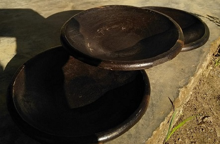
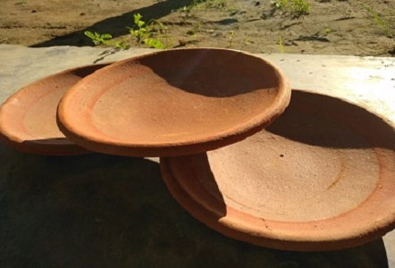
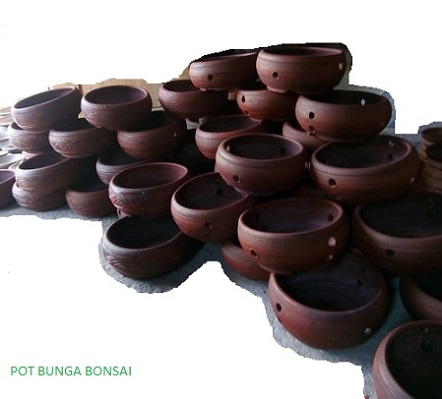
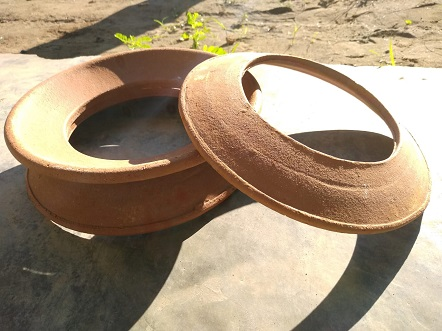
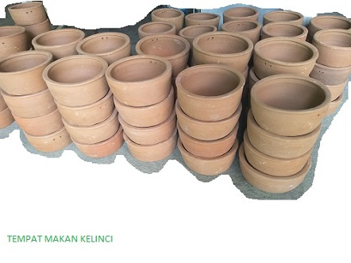
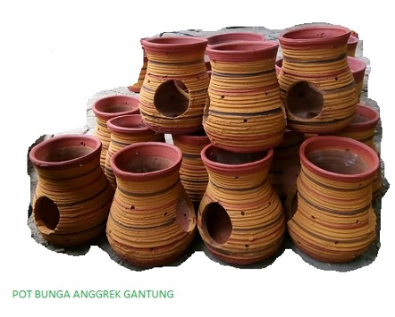

Produk

Cobek Hitam
cobek digunakan untuk menghaluskan bumbu untuk masakan,nah ada 2 warna cobek dari tanah liat warna yang dihasilkan diperoleh secara alami dengan cara dua kali pembakaran, tahap pembakaran yang kedua diberi daun kelapa diatas cobek agar mendapatkan warna hitam.

Cobek Merah
cobek merah ini sama kegunaanya dengan cobek warna hitam namun perbedaanya terdapat pada proses pembakaran ,cobek warna merah ini proses pembakaran nyya hanya satu tahap pembakaran saja.

Pot Bunga Bonsai
pot bunga bonsai ini dibuat pendek ,cekung dan agak lebar karena disesuaikan dengan bentuk bunga bonsai agar lebih cantik lagi.

Klowong
klowong yaitu lingkaran yang digunakan pada LUWENG orang jawa menyebut tempat orang memasak zaman dahulu agar dalam menempatkan alat masak seperti panci besar dan penggorengan lebih mudah dan tidak mudah goyang atau jatuh.

Tempat Makan Kelinci
Tempat makan kelinci ini dibuat dengan bentu bawah yang rata dan lapisan nya dibuat agak tebal agar jika disaat elinci makan tidak mudah tumpah bahkan disebagian sisi ada lubang untuk tempat tali agar lebih aman.

Pot Anggrek Gantung
Pot ini didesain khusus dan berbeda dengan pot anggrek pada umumnya karena pot ini dapat digantung dan didesain agar mudah dalam penyiraman bunga.